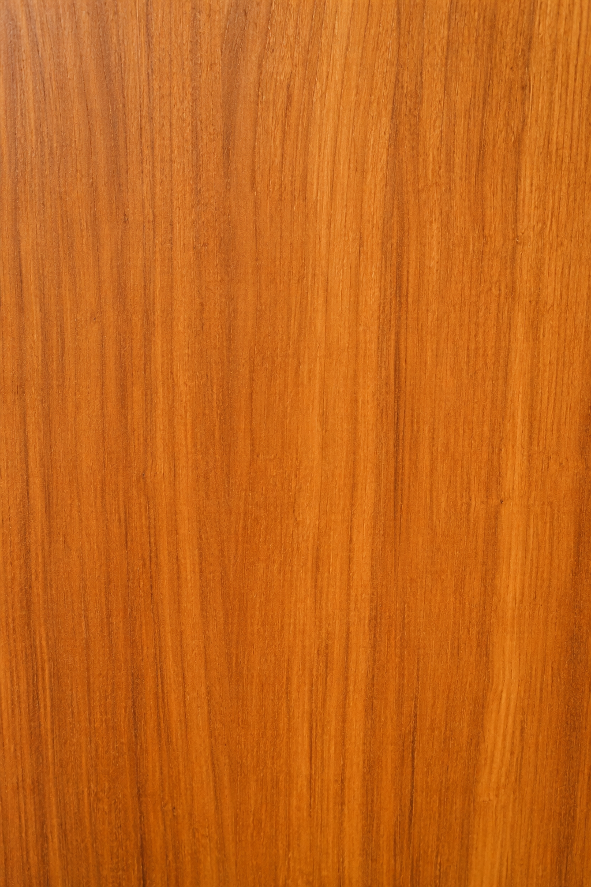
Ligero
De veta fina y tono cálido.
Un buen instrumento tiene que sentirse propio desde el primer acorde. Construimos cada pieza a medida, para crear algo que sea único e irrepetible.
Creá el tuyo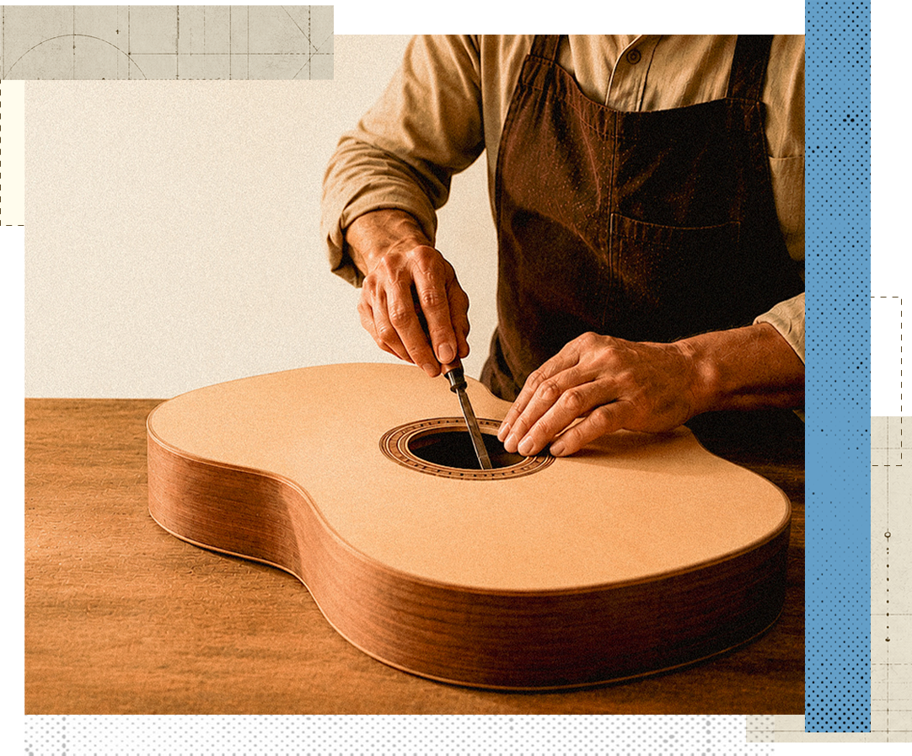
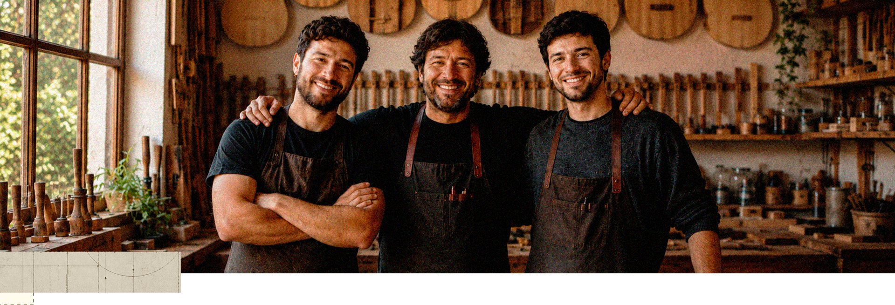
Nos especializamos en el diseño y la construcción de instrumentos a medida. Construimos piezas únicas para la búsqueda musical de cada persona.
Conocer más
Cada especie aporta una personalidad diferente.
Descubrí cómo el material define el carácter de cada instrumento.

De veta fina y tono cálido.
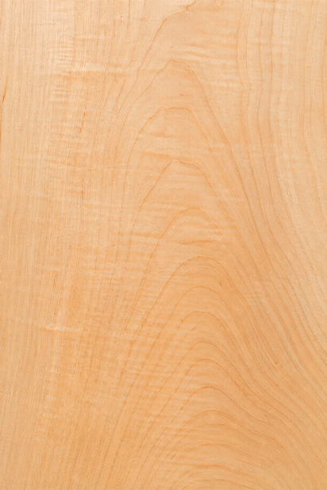
De textura uniforme
y color claro.
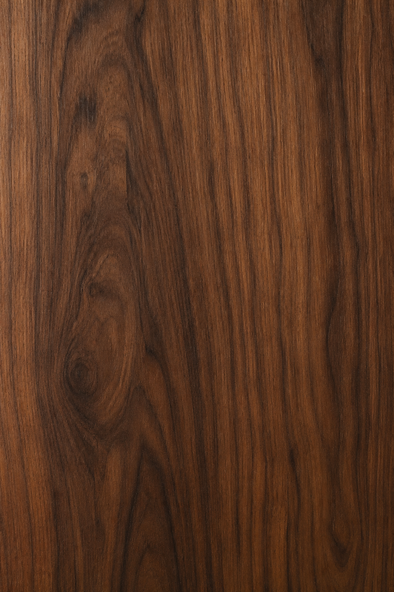
De vetas profundas
y color intenso.
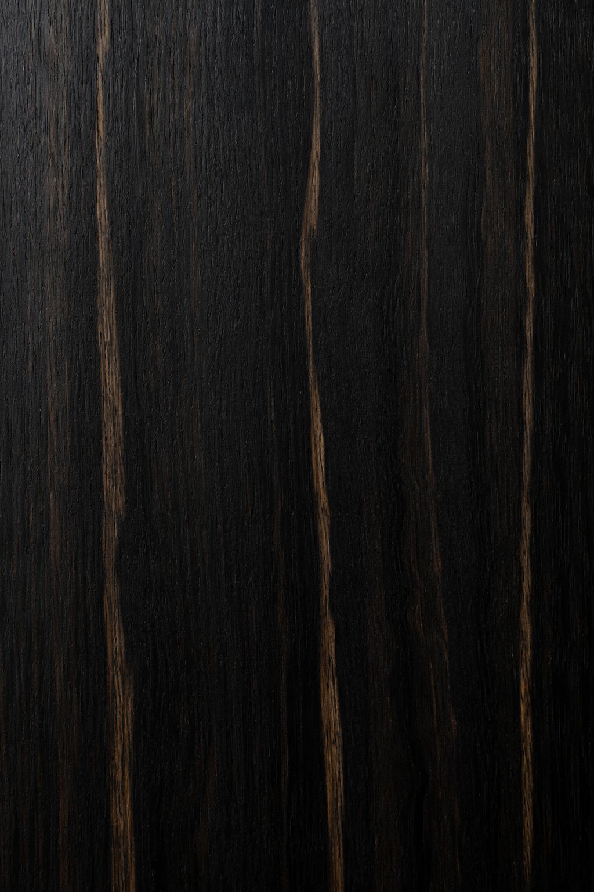
De gran dureza
y acabado elegante.
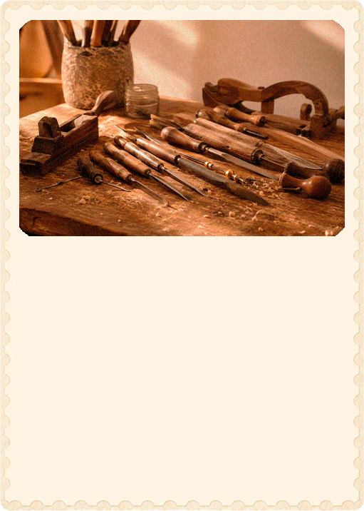
Nivel: Inicial
Aprendé a calibrar, limpiar y realizar los ajustes básicos.
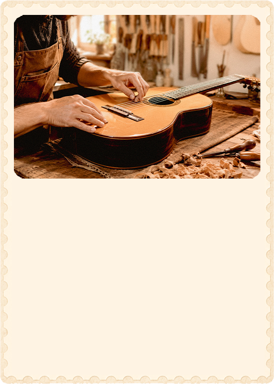
Nivel: Intermedio
Aprendé a diseñar y construir una guitarra criolla utilizando técnicas de luthería artesanal.
$100.000
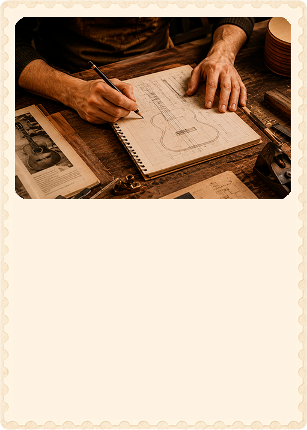
Nivel: Inicial
Conocé las bases de la luthería y sus herramientas esenciales.
Elegimos las maderas, definimos el modelo y planificamos cada etapa antes de comenzar la construcción.
Cada pieza se trabaja manualmente hasta formar la estructura completa del instrumento.
Se calibra la guitarra, se aplica el acabado y se realizan las pruebas finales antes de la entrega.
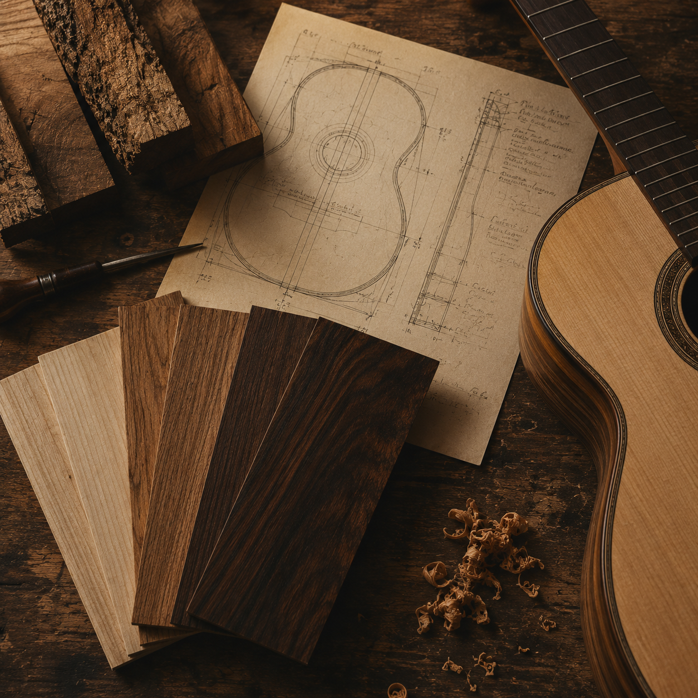
Contanos que estás buscando.
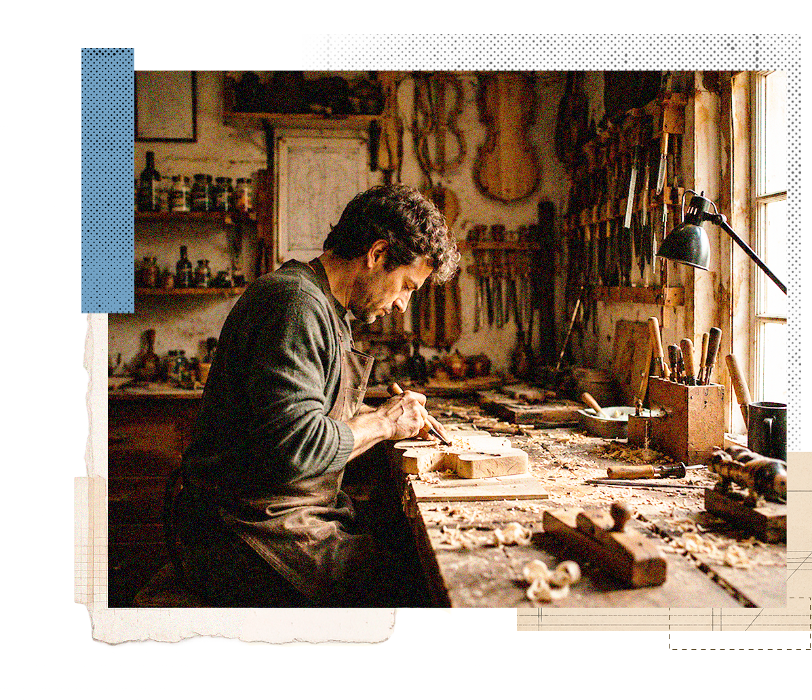